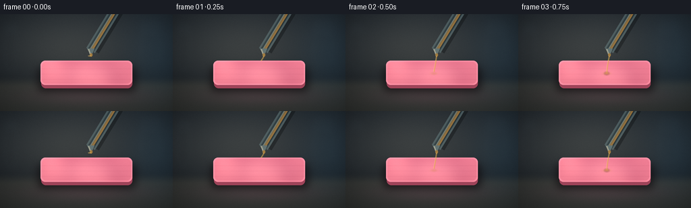
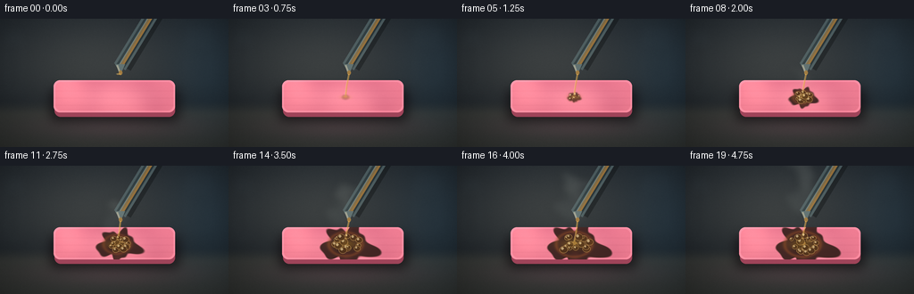

CODING AGENTS AS PIXEL WORLD MODELS
traex/DeepSeek-V4.1-Flash · material_0043
点击播放 · 原生 RGB 像素
逐轮保存的候选
回放视频、检查图与代码变化。
每份候选均可单独播放。实际图片检查记录在下方工具轨迹中。
候选 01播放与检查图
点击播放 · 原生 RGB 像素


展开代码变化
--- 上一保存版本
+++ 本次保存版本
@@ -0,0 +1,370 @@
+"""Procedural RGB timelapse: sulfuric acid reacting with chewing gum."""
+
+from pathlib import Path
+
+import numpy as np
+from PIL import Image, ImageDraw, ImageFilter
+from scipy.ndimage import gaussian_filter
+
+import artifact_io
+
+
+ROOT = Path(__file__).resolve().parent
+WIDTH, HEIGHT, FRAMES, FPS = 256, 144, 20, 4.0
+SS = 4 # Supersampling factor for cleaner edges and small highlights.
+W, H = WIDTH * SS, HEIGHT * SS
+
+
+def rgba_layer():
+ return Image.new("RGBA", (W, H), (0, 0, 0, 0))
+
+
+def smoothstep(edge0, edge1, x):
+ t = np.clip((x - edge0) / (edge1 - edge0), 0.0, 1.0)
+ return t * t * (3.0 - 2.0 * t)
+
+
+def screen_blend(base, layer):
+ """Screen an RGB array with another RGB array."""
+ return 255.0 - (255.0 - base) * (255.0 - layer) / 255.0
+
+
+def make_background():
+ yy, xx = np.mgrid[0:H, 0:W].astype(np.float32)
+ xn, yn = xx / W, yy / H
+
+ # Deep blue-gray lab wall and a warmer, softly reflective bench.
+ wall = np.zeros((H, W, 3), dtype=np.float32)
+ wall[..., 0] = 22 + 11 * (1.0 - yn)
+ wall[..., 1] = 29 + 14 * (1.0 - yn)
+ wall[..., 2] = 36 + 17 * (1.0 - yn)
+
+ bench = np.zeros_like(wall)
+ bench[..., 0] = 32 + 20 * yn
+ bench[..., 1] = 39 + 18 * yn
+ bench[..., 2] = 43 + 14 * yn
+ horizon = smoothstep(0.63, 0.76, yn)
+ bg = wall * (1.0 - horizon[..., None]) + bench * horizon[..., None]
+
+ # Soft key light from the upper left and a cool rim from the right.
+ key = np.exp(-(((xn - 0.39) / 0.46) ** 2 + ((yn - 0.34) / 0.43) ** 2))
+ rim = np.exp(-(((xn - 0.93) / 0.18) ** 2 + ((yn - 0.42) / 0.52) ** 2))
+ bg += key[..., None] * np.array([28, 25, 19], dtype=np.float32)
+ bg += rim[..., None] * np.array([4, 12, 17], dtype=np.float32)
+
+ # Very faint out-of-focus vessels imply a laboratory setting.
+ vessel = Image.new("L", (W, H), 0)
+ vd = ImageDraw.Draw(vessel)
+ vd.rounded_rectangle((30, 54, 100, 332), radius=34, outline=76, width=5)
+ vd.rectangle((35, 55, 95, 113), fill=35)
+ vd.rounded_rectangle((836, 35, 950, 292), radius=26, outline=62, width=5)
+ vd.rectangle((843, 35, 944, 123), fill=28)
+ vessel = vessel.filter(ImageFilter.GaussianBlur(14))
+ va = np.asarray(vessel, dtype=np.float32) / 255.0
+ bg += va[..., None] * np.array([15, 21, 24], dtype=np.float32)
+
+ # Bench reflection directly beneath the gum.
+ reflection = np.exp(-(((xn - 0.5) / 0.34) ** 2 + ((yn - 0.84) / 0.095) ** 2))
+ bg += reflection[..., None] * np.array([17, 5, 10], dtype=np.float32)
+
+ # Gentle vignette.
+ vx, vy = (xn - 0.5) * 1.15, (yn - 0.48) * 1.12
+ vignette = np.clip(1.0 - 0.58 * (vx * vx + vy * vy), 0.48, 1.0)
+ bg *= vignette[..., None]
+
+ # Fine, static surface texture.
+ rng = np.random.default_rng(143)
+ noise = rng.normal(0.0, 1.0, (H, W)).astype(np.float32)
+ noise = gaussian_filter(noise, 1.1)
+ bg += noise[..., None] * 1.7
+ return np.clip(bg, 0, 255)
+
+
+def rounded_mask(box, radius):
+ layer = Image.new("L", (W, H), 0)
+ ImageDraw.Draw(layer).rounded_rectangle(box, radius=radius, fill=255)
+ return np.asarray(layer, dtype=np.float32) / 255.0
+
+
+def gum_geometry():
+ x0, y0, x1, y1 = 60 * SS, 69 * SS, 196 * SS, 105 * SS
+ radius = 7 * SS
+ top = rounded_mask((x0, y0, x1, y1), radius)
+
+ # A narrow side and a cast shadow make the stick read as a physical object.
+ side = rounded_mask((x0 + 1 * SS, y0 + 5 * SS, x1, y1 + 5 * SS), radius)
+ side = np.maximum(0.0, side - top * 0.94)
+ shadow = rounded_mask((x0 - 4 * SS, y0 + 9 * SS, x1 + 5 * SS, y1 + 10 * SS), radius)
+ shadow = gaussian_filter(shadow, 6.0 * SS)
+
+ # Rounded bevel and a bright upper lip.
+ inner = rounded_mask((x0 + 2 * SS, y0 + 2 * SS, x1 - 2 * SS, y1 - 2 * SS), radius - 1 * SS)
+ bevel = np.clip(top - inner, 0.0, 1.0)
+ return top, side, shadow, bevel, (x0, y0, x1, y1)
+
+
+def make_gum(top, side, shadow, bevel, box):
+ x0, y0, x1, y1 = box
+ yy, xx = np.mgrid[0:H, 0:W].astype(np.float32)
+ rng = np.random.default_rng(9001)
+
+ # Warm pink stick, with a slightly lighter pressed center.
+ low = gaussian_filter(rng.normal(0, 1, (H, W)).astype(np.float32), 12 * SS)
+ low /= max(np.std(low), 1e-5)
+ fine = gaussian_filter(rng.normal(0, 1, (H, W)).astype(np.float32), 1.5)
+ center_light = np.exp(-(((xx - (x0 + x1) / 2) / (0.39 * (x1 - x0))) ** 2
+ + ((yy - (y0 + y1) / 2) / (0.42 * (y1 - y0))) ** 2))
+
+ gum = np.empty((H, W, 3), dtype=np.float32)
+ gum[..., 0] = 226 + 9 * center_light + 6 * low + 2.0 * fine
+ gum[..., 1] = 119 + 13 * center_light + 5 * low + 1.7 * fine
+ gum[..., 2] = 143 + 12 * center_light + 4 * low + 1.8 * fine
+
+ # Directional shading, a pale pressed edge, and very subtle stick grooves.
+ upper = np.clip(1.0 - (yy - y0) / max(y1 - y0, 1), 0, 1)
+ gum += (upper * 11.0)[..., None] * np.array([1.0, 0.7, 0.8], dtype=np.float32)
+ gum += (bevel * 20.0)[..., None] * np.array([1.0, 0.88, 0.9], dtype=np.float32)
+ for gy in (81, 89, 97):
+ groove = np.exp(-((yy - gy * SS) / (0.75 * SS)) ** 2)
+ gum -= (groove * top * 5.0)[..., None] * np.array([1.0, 0.8, 0.8], dtype=np.float32)
+
+ side_rgb = np.array([154, 67, 91], dtype=np.float32)
+ shadow_rgb = np.array([11, 7, 11], dtype=np.float32)
+ return gum, side_rgb, shadow_rgb
+
+
+def damage_arrays(frame, box, top):
+ x0, y0, x1, y1 = box
+ yy, xx = np.mgrid[0:H, 0:W].astype(np.float32)
+ t = frame / (FRAMES - 1)
+ severity = smoothstep(0.11, 0.87, t)
+
+ cx = 131.0 * SS
+ cy = 88.0 * SS
+ dx = (xx - cx) / SS
+ dy = (yy - cy) / SS
+ dist = np.sqrt((dx * 1.0) ** 2 + (dy * 1.42) ** 2)
+
+ # Low-frequency irregularity gives the burn an organic, spreading boundary.
+ rng = np.random.default_rng(412)
+ field = gaussian_filter(rng.normal(0, 1, (H, W)).astype(np.float32), 8 * SS)
+ field /= max(np.std(field), 1e-5)
+ angle = np.arctan2(dy, dx)
+ lobes = 1.4 * np.sin(5.0 * angle + 0.4) + 0.8 * np.sin(9.0 * angle - 1.0)
+ radius = 4.0 + severity * (22.0 + 5.0 * (field + lobes))
+ edge = smoothstep(radius + 1.6, radius - 2.1, dist)
+ char = edge * top * smoothstep(0.08, 0.30, t)
+
+ # A hot, sticky rim around the deepest corrosion.
+ rim_radius = 5.0 + severity * 15.0
+ rim = np.exp(-((dist - rim_radius) / 2.2) ** 2) * top
+ rim *= smoothstep(0.15, 0.35, t) * (0.45 + 0.35 * severity)
+
+ # The center darkens to a glossy black-brown cavity.
+ cavity = np.exp(-((dx / (4.0 + 8.0 * severity)) ** 2
+ + (dy / (2.6 + 5.4 * severity)) ** 2))
+ cavity *= top * smoothstep(0.18, 0.62, t)
+
+ # Initial acid wetting, then a thin amber pool at the impact point.
+ wet = np.exp(-((dx / (5.0 + 11.0 * severity)) ** 2
+ + (dy / (2.0 + 4.0 * severity)) ** 2))
+ wet *= top * smoothstep(0.04, 0.16, t)
+ return char, rim, cavity, wet, severity
+
+
+def draw_pipette(frame):
+ layer = rgba_layer()
+ d = ImageDraw.Draw(layer, "RGBA")
+ x1, y1 = 184 * SS, -28 * SS
+ x2, y2 = 134 * SS, 54 * SS
+
+ # Soft shadow behind the glass.
+ d.line((x1 + 5 * SS, y1, x2 + 5 * SS, y2), fill=(3, 6, 8, 82), width=17 * SS)
+ # Outer and inner glass walls.
+ d.line((x1, y1, x2, y2), fill=(113, 145, 150, 106), width=15 * SS)
+ d.line((x1, y1, x2, y2), fill=(50, 77, 83, 98), width=10 * SS)
+ d.line((x1 - 1 * SS, y1, x2 - 1 * SS, y2), fill=(181, 218, 219, 108), width=3 * SS)
+ d.line((x1 + 4 * SS, y1, x2 + 4 * SS, y2), fill=(28, 48, 55, 120), width=2 * SS)
+ # Amber liquid inside the pipette.
+ d.line((x1 + 1 * SS, y1, x2 + 1 * SS, y2), fill=(211, 151, 63, 150), width=4 * SS)
+ d.line((x1, y1, x2, y2), fill=(248, 213, 128, 82), width=1 * SS)
+
+ # Tapered glass tip.
+ d.polygon([(x2 - 5 * SS, y2 - 3 * SS), (x2 + 6 * SS, y2 - 3 * SS),
+ (x2 + 1 * SS, y2 + 8 * SS)], fill=(141, 173, 174, 120))
+ d.line((x2 - 3 * SS, y2 - 2 * SS, x2, y2 + 6 * SS), fill=(235, 239, 212, 140), width=2 * SS)
+ d.ellipse((x2 - 1 * SS, y2 + 4 * SS, x2 + 3 * SS, y2 + 9 * SS), fill=(221, 163, 70, 155))
+ return layer
+
+
+def draw_stream(frame, severity):
+ layer = rgba_layer()
+ d = ImageDraw.Draw(layer, "RGBA")
+ sx, sy = 135 * SS, 62 * SS
+ tx, ty = 131 * SS, 87 * SS
+ t = frame / (FRAMES - 1)
+ start = smoothstep(0.015, 0.12, t)
+ ey = sy + (ty - sy) * start
+
+ wobble = np.sin(frame * 1.25) * 0.55 * SS
+ midx = (sx + tx) / 2 + wobble
+ d.line((sx, sy, midx, (sy + ey) / 2, tx, ey),
+ fill=(218, 166, 73, 142), width=int(1.8 * SS))
+ d.line((sx - 1 * SS, sy, midx - 1 * SS, (sy + ey) / 2, tx - 1 * SS, ey),
+ fill=(250, 225, 146, 120), width=max(1, int(0.65 * SS)))
+ if start > 0.95:
+ pulse = 0.7 + 0.3 * np.sin(frame * 2.1)
+ rx = (2.1 + 1.5 * severity) * SS
+ ry = (1.1 + 0.8 * severity) * SS
+ d.ellipse((tx - rx, ty - ry, tx + rx, ty + ry),
+ fill=(233, 178, 78, int(120 * pulse)))
+ return layer
+
+
+def draw_bubbles(frame, severity):
+ layer = rgba_layer()
+ d = ImageDraw.Draw(layer, "RGBA")
+ rng = np.random.default_rng(773)
+ if severity < 0.10:
+ return layer
+
+ for i in range(22):
+ phase = rng.uniform(0, 2 * np.pi)
+ life = 0.55 + 0.45 * np.sin(frame * (0.72 + 0.08 * (i % 4)) + phase)
+ if life < 0.24:
+ continue
+ ang = rng.uniform(0, 2 * np.pi)
+ rad = np.sqrt(rng.uniform(0.02, 1.0)) * (5.0 + 14.0 * severity)
+ bx = (131.0 + rad * np.cos(ang)) * SS
+ by = (88.0 + rad * 0.52 * np.sin(ang)) * SS
+ size = (1.2 + 2.4 * life + 1.0 * severity) * SS
+ # Bubbles are largest around the bubbling center and small at the rim.
+ if i % 5 == 0:
+ size *= 0.62
+ alpha = int(175 * smoothstep(0.10, 0.30, severity))
+ d.ellipse((bx - size, by - size * 0.84, bx + size, by + size * 0.84),
+ fill=(83, 55, 27, alpha), outline=(197, 154, 87, min(230, alpha + 20)),
+ width=max(1, int(0.55 * SS)))
+ hx = bx - size * 0.30
+ hy = by - size * 0.30
+ hs = max(1, int(size * 0.34))
+ d.ellipse((hx - hs, hy - hs, hx + hs, hy + hs), fill=(255, 231, 170, 155))
+ return layer
+
+
+def draw_fumes(frame, severity):
+ layer = rgba_layer()
+ d = ImageDraw.Draw(layer, "RGBA")
+ if frame < 4:
+ return layer
+
+ for i in range(9):
+ age = max(0.0, frame - 3 - i * 0.34)
+ if age <= 0:
+ continue
+ travel = min(age / 13.0, 1.0)
+ base_x = 130.0 + 2.2 * np.sin(i * 2.13)
+ x = (base_x + (5.0 + 1.6 * (i % 3)) * np.sin(age * 0.57 + i)
+ + 8.0 * travel * np.sin(i * 1.7)) * SS
+ y = (80.0 - age * (4.2 + 0.55 * (i % 4))) * SS
+ w = (3.0 + 5.0 * travel + 1.0 * (i % 3)) * SS
+ h = (2.0 + 2.6 * travel) * SS
+ alpha = int(18 + 22 * severity * (1.0 - 0.45 * travel))
+ d.ellipse((x - w, y - h, x + w, y + h),
+ fill=(190, 202, 194, alpha))
+
+ # Two broader vapor plumes make the reaction legible at thumbnail size.
+ for i in range(3):
+ age = max(0.0, frame - 5 - i * 2.2)
+ if age <= 0:
+ continue
+ x = (128 + 6 * np.sin(age * 0.47 + i * 1.9)) * SS
+ y = (78 - age * 3.0) * SS
+ rw = (9 + age * 0.9) * SS
+ rh = (4 + age * 0.32) * SS
+ d.ellipse((x - rw, y - rh, x + rw, y + rh),
+ fill=(172, 190, 185, int(9 + 9 * severity)))
+
+ layer = layer.filter(ImageFilter.GaussianBlur(4.5 * SS))
+ return layer
+
+
+def composite_rgba(base, layer):
+ arr = np.asarray(layer, dtype=np.float32) / 255.0
+ rgb, alpha = arr[..., :3], arr[..., 3:4]
+ return base * (1.0 - alpha) + rgb * 255.0 * alpha
+
+
+def render_frame(frame, background, gum_rgb, side_rgb, shadow_rgb,
+ top, side, shadow, bevel, box):
+ yy, xx = np.mgrid[0:H, 0:W].astype(np.float32)
+ char, rim, cavity, wet, severity = damage_arrays(frame, box, top)
+
+ # Background and gum's soft contact shadow.
+ img = background.copy()
+ img = img * (1.0 - 0.64 * shadow[..., None]) + shadow_rgb * (0.64 * shadow[..., None])
+
+ # Gum side, then top surface.
+ img = img * (1.0 - side[..., None]) + side_rgb * side[..., None]
+ img = img * (1.0 - top[..., None]) + gum_rgb * top[..., None]
+
+ # Charred material, hot brown rim, and the glossy central cavity.
+ char_color = np.empty_like(img)
+ char_color[..., 0] = 45 + 15 * np.exp(-((xx - 132 * SS) / (5 * SS)) ** 2)
+ char_color[..., 1] = 28 + 6 * np.exp(-((xx - 132 * SS) / (5 * SS)) ** 2)
+ char_color[..., 2] = 24 + 4 * np.exp(-((xx - 132 * SS) / (5 * SS)) ** 2)
+ img = img * (1.0 - 0.90 * char[..., None]) + char_color * (0.90 * char[..., None])
+
+ rim_color = np.array([156, 83, 43], dtype=np.float32)
+ img = img * (1.0 - 0.52 * rim[..., None]) + rim_color * (0.52 * rim[..., None])
+
+ cavity_color = np.array([18, 12, 10], dtype=np.float32)
+ img = img * (1.0 - 0.86 * cavity[..., None]) + cavity_color * (0.86 * cavity[..., None])
+
+ # Amber acid makes the impact point immediately readable.
+ wet_color = np.array([207, 151, 58], dtype=np.float32)
+ img = img * (1.0 - 0.38 * wet[..., None]) + wet_color * (0.38 * wet[..., None])
+
+ # Fumes sit behind the glassware and stream.
+ img = composite_rgba(img, draw_fumes(frame, severity))
+ img = composite_rgba(img, draw_pipette(frame))
+ img = composite_rgba(img, draw_stream(frame, severity))
+
+ # Bubbles are drawn last so their highlights survive at 256x144.
+ img = composite_rgba(img, draw_bubbles(frame, severity))
+
+ # Subtle moving specular sheen on the wet reaction center.
+ glow = np.exp(-(((xx - 132 * SS) / (8 * SS)) ** 2
+ + ((yy - 85 * SS) / (4 * SS)) ** 2))
+ glow *= severity * (0.25 + 0.10 * np.sin(frame * 0.9))
+ img = screen_blend(img, glow[..., None] * np.array([55, 42, 21], dtype=np.float32))
+
+ # Color grade and restrained film grain.
+ img[..., 0] = np.clip(img[..., 0] * 1.025 + 1.5, 0, 255)
+ img[..., 1] = np.clip(img[..., 1] * 1.005 + 0.8, 0, 255)
+ img[..., 2] = np.clip(img[..., 2] * 0.985, 0, 255)
+ rng = np.random.default_rng(500 + frame)
+ grain = rng.normal(0.0, 1.0, (H, W)).astype(np.float32)
+ grain = gaussian_filter(grain, 0.65)
+ img += grain[..., None] * 0.8
+ return np.clip(img, 0, 255)
+
+
+def main():
+ background = make_background()
+ top, side, shadow, bevel, box = gum_geometry()
+ gum_rgb, side_rgb, shadow_rgb = make_gum(top, side, shadow, bevel, box)
+
+ frames = []
+ for frame in range(FRAMES):
+ large = render_frame(frame, background, gum_rgb, side_rgb, shadow_rgb,
+ top, side, shadow, bevel, box)
+ image = Image.fromarray(large.astype(np.uint8), "RGB")
+ image = image.resize((WIDTH, HEIGHT), Image.Resampling.LANCZOS)
+ frames.append(np.asarray(image, dtype=np.uint8))
+
+ artifact_io.save(np.stack(frames), ROOT)
+
+
+if __name__ == "__main__":
+ main()
候选 02播放与检查图
点击播放 · 原生 RGB 像素

展开代码变化
--- 上一保存版本
+++ 本次保存版本
@@ -359,7 +359,7 @@
for frame in range(FRAMES):
large = render_frame(frame, background, gum_rgb, side_rgb, shadow_rgb,
top, side, shadow, bevel, box)
- image = Image.fromarray(large.astype(np.uint8), "RGB")
+ image = Image.fromarray(large.astype(np.uint8))
image = image.resize((WIDTH, HEIGHT), Image.Resampling.LANCZOS)
frames.append(np.asarray(image, dtype=np.uint8))
可观测工具轨迹
实际执行的命令与返回图片。
命令 1exit 0
/bin/bash -c "pwd && rg --files -g 'prompt.txt' -g 'GENERATION_RULES.md' -g 'task_spec.json' -g '"'!*.mp4'"' -g '"'!*.mov'"'"
命令 2exit 0
/bin/bash -c "git status --short && find . -maxdepth 2 -type f -printf '%p %s bytes\\n' | sort | head -200"
命令 3exit 0
/bin/bash -c 'cat prompt.txt'
命令 4exit 0
/bin/bash -c 'cat GENERATION_RULES.md'
命令 5exit 0
/bin/bash -c "cat task_spec.json && printf '\\n--- artifact_io.py ---\\n' && sed -n '1,240p' artifact_io.py && printf '\\n--- player ---\\n' && sed -n '1,220p' player_template.html"
命令 6exit 0
/bin/bash -c "python - <<'PY'
import importlib.util
for m in ['numpy','PIL','scipy','imageio','cv2']:
print(m, bool(importlib.util.find_spec(m)))
PY
command -v ffmpeg || true
command -v chafa || true
command -v viu || true
command -v jp2 || true"命令 7exit 0
/bin/bash -c 'python generate.py'
命令 8exit 0
/bin/bash -c "python - <<'PY'
from pathlib import Path
from PIL import Image
import numpy as np
files=sorted(Path('frames').glob('*.png'))
a=np.stack([np.asarray(Image.open(f).convert('RGB')) for f in files])
print('shape',a.shape,'dtype',a.dtype)
print('global min/max/mean',a.min(),a.max(),a.mean(axis=(0,1,2)))
for i,f in enumerate(files):
x=a[i].astype(np.float32)
prev=a[i-1].astype(np.float32) if i else x
print(f'{i:02d} mean={x.mean():6.2f} std={x.std():6.2f} madprev={np.abs(x-prev).mean():6.3f} dark={np.mean(x.mean(2)<35):.3f} pink={np.mean((x[...,0]>120)&(x[...,0]>1.25*x[...,1])):.3f}')
PY"命令 9exit 0
/bin/bash -c "python - <<'PY'
from PIL import Image
import numpy as np
for idx in [0,7,13,19]:
im=np.asarray(Image.open(f'frames/{idx:02d}.png').convert('RGB'))
im=np.asarray(Image.fromarray(im).resize((64,36),Image.Resampling.LANCZOS))
print(f'FRAME {idx}')
for y in range(0,36,2):
line=''
for x in range(64):
a=im[y,x]; b=im[min(y+1,35),x]
line+=f'\\033[38;2;{a[0]};{a[1]};{a[2]}m\\033[48;2;{b[0]};{b[1]};{b[2]}mâ'
print(line+'\\033[0m')
PY"命令 10exit 0
/bin/bash -c "python - <<'PY'
from PIL import Image
import numpy as np
ims=[]
for i in [0,4,8,12,16,19]:
im=Image.open(f'frames/{i:02d}.png').convert('RGB')
ims.append(im)
sheet=Image.new('RGB',(256*3,144*2),(18,18,20))
for j,im in enumerate(ims): sheet.paste(im,((j%3)*256,(j//3)*144))
sheet.resize((1152,576),Image.Resampling.NEAREST).save('review_sheet.png')
PY"命令 11exit 0
/bin/bash -c "python - <<'PY'
from PIL import Image
import numpy as np
im=Image.open('review_sheet.png')
# Print a compact hue/lightness map at one character per 6x6 source block.
a=np.asarray(im.resize((128,48),Image.Resampling.BOX)).astype(float)
chars=' .:-=+*#%@'
for y in range(48):
s=''
for x in range(128):
r,g,b=a[y,x]
if r>1.28*g and r>1.25*b and r>70: c='P'
elif r>1.25*b and g>1.18*b and r>60: c='A'
elif r>g*1.12 and g>b*1.12 and r>35: c='w'
elif max(r,g,b)<28: c=' '
else: c=chars[min(9,int(max(r,g,b)/256*10))]
s+=c
print(s)
PY"命令 12exit 0
/bin/bash -c "python - <<'PY'
from PIL import Image
import numpy as np
for idx in [0,7,13,19]:
a=np.asarray(Image.open(f'frames/{idx:02d}.png').convert('RGB'))
print('\\nFRAME',idx)
# Crop reaction + pipette, report luminance and hue-map at native resolution.
crop=a[38:110,105:200]
for y in range(0,72,3):
s=''
for x in range(0,95,2):
r,g,b=crop[min(y,71),min(x,94)]
if r>g*1.32 and r>b*1.24 and r>120: c='P'
elif r>g*1.15 and g>b*1.18 and r>60: c='a'
elif r>g*1.05 and g>b*1.05 and r>28: c='w'
elif max(r,g,b)<28: c=' '
elif (r+g+b)/3<55: c='.'
elif (r+g+b)/3<85: c=':'
elif (r+g+b)/3<115: c='-'
elif (r+g+b)/3<150: c='='
else: c='#'
s+=c
print(s)
PY"命令 13exit 0
/bin/bash -c "python generate.py && python - <<'PY'
from pathlib import Path
import json
import numpy as np
from PIL import Image
spec=json.loads(Path('task_spec.json').read_text())
n,h,w=spec['frames'],spec['height'],spec['width']
frames=sorted(Path('frames').glob('*.png'))
assert len(frames)==n, len(frames)
a=np.stack([np.asarray(Image.open(p).convert('RGB')) for p in frames])
assert a.shape==(n,h,w,3) and a.dtype==np.uint8
z=np.load('pixels.npz')['pixels']
assert z.shape==(h,w,n) and z.dtype==np.uint32
packed=(a[...,0].astype(np.uint32)<<16)|(a[...,1].astype(np.uint32)<<8)|a[...,2].astype(np.uint32)
assert np.array_equal(z,packed.transpose(1,2,0))
html=Path('index.html').read_text()
assert '__DATA__' not in html and '__ID__' not in html and 'window.__pixelReady' in html
print('validated',a.shape,'rgb_mean',a.mean(axis=(0,1,2)).round(2),'motion_mean',np.abs(np.diff(a.astype(np.int16),axis=0)).mean().round(3))
print('artifacts',[(p.name,p.stat().st_size) for p in [Path('pixels.npz'),Path('inspection.png'),Path('index.html'),Path('generate.py')]])
PY"命令 14exit 0
/bin/bash -c "find . -maxdepth 2 -type f -printf '%p %s\\n' | sort"
命令 15exit 0
/bin/bash -c "node -e \"const fs=require('fs');const h=fs.readFileSync('index.html','utf8');const m=h.match(/<script>([\\s\\S]*)<\\/script>/);if("'!m)throw Error('"'missing script');new Function(m[1]);console.log('player script parses');\""命令 16exit 0
/bin/bash -c "python - <<'PY'
from pathlib import Path
import cv2
import numpy as np
from PIL import Image
frames=[np.asarray(Image.open(p).convert('RGB')) for p in sorted(Path('frames').glob('*.png'))]
h,w=frames[0].shape[:2]
writer=cv2.VideoWriter('video.mp4',cv2.VideoWriter_fourcc(*'mp4v'),4.0,(w,h))
assert writer.isOpened()
for frame in frames:
writer.write(cv2.cvtColor(frame,cv2.COLOR_RGB2BGR))
writer.release()
print(Path('video.mp4').stat().st_size)
PY"命令 17exit 0
/bin/bash -c "python - <<'PY'
import cv2
cap=cv2.VideoCapture('video.mp4')
frames=int(cap.get(cv2.CAP_PROP_FRAME_COUNT))
fps=cap.get(cv2.CAP_PROP_FPS)
w=int(cap.get(cv2.CAP_PROP_FRAME_WIDTH)); h=int(cap.get(cv2.CAP_PROP_FRAME_HEIGHT))
ok=[]; means=[]
while True:
good, frame=cap.read()
if not good: break
ok.append(frame.shape)
means.append(float(frame.mean()))
cap.release()
print('decoded',len(ok),'declared',frames,'fps',fps,'size',(w,h),'means',round(min(means),2),round(max(means),2))
assert len(ok)==20 and abs(fps-4)<0.01 and (w,h)==(256,144)
PY"命令 18exit 0
/bin/bash -c "python - <<'PY'
from pathlib import Path
for p in [Path('__pycache__'), Path('review_sheet.png')]:
if p.is_dir():
for child in p.iterdir():
child.unlink()
p.rmdir()
elif p.exists():
p.unlink()
print('cleaned')
PY
find . -maxdepth 2 -type f -printf '%p %s\\n' | sort"保存候选 2 份；完成命令 18 次；可验证图片返回 0 张。原始 API 响应与完整日志保留在本地。